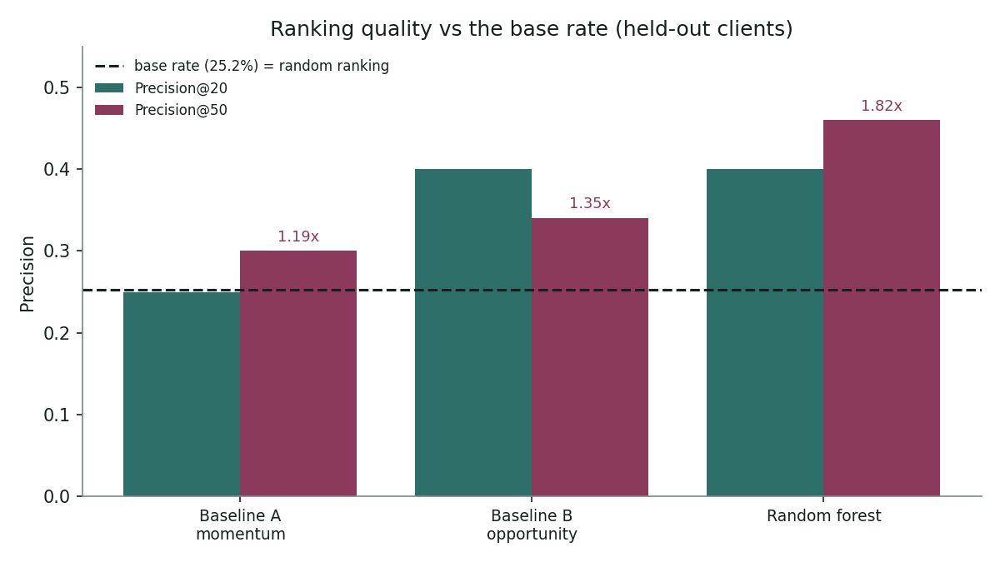
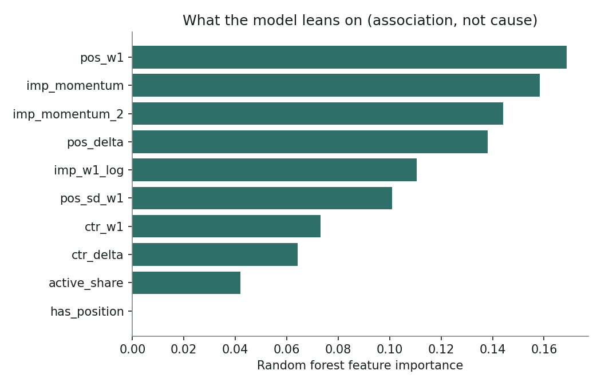

Abstract
Which pages should a content team review first, ranked by the risk that they lose search visibility next month? Using — content items from the FlyRank internship warehouse, I built features from a 90-day observation window and labelled a page declining when its impressions in the following 30-day window fell below 80% of the prior window — a forward label the features never observe. A random forest was compared against two transparent baselines on an identical split grouped by client, so every score reflects performance on organisations unseen during training. Against a base rate of —, the model reached Precision@50 of — (lift —×, AUC —), against — for a momentum baseline and — for a click-opportunity rule, neither of which discriminated above chance (AUC — and —). The model's advantage concentrates at the top of the ranking, so it is presented as a triage ranker rather than a classifier. The output is a ranked review queue with reason codes, intended as decision support for an editor allocating limited hours, not as a prediction of any ranking outcome.
The decision this supports
A content team has bandwidth to review perhaps twenty pages a week, drawn from a library of tens of thousands. The decision is not is this page healthy — it is which twenty go into this month's queue. That framing matters, because it makes the task a ranking problem rather than a classification one. Recall across the full library is irrelevant when only the top of the list is ever read.
Unit of analysis
One content item belonging to one client, observed across a 120-day span of daily search performance.
The action, and the cost of getting it wrong
An editor opens the top-ranked pages, checks each against its reason code, and decides whether to refresh, re-title, or leave alone. Nothing is automated.
A false positive costs editor hours on a page that was fine — annoying, bounded, immediately visible. A false negative is the expensive error: a page with real traffic keeps sliding, quietly, and the loss compounds for weeks before anyone notices. The asymmetry argues for precision at the very top of the queue, which is what the evaluation measures.
Why a model rather than a rule
A fixed rule commits to thresholds in advance. Rather than assume a learned model does better, I scored both on the same split and report the gap as measured — including where it is small, and including one baseline that performs near chance. That result turned out to be the more interesting half of the work.
Data
Release. The FlyRank ML Internship warehouse (gated Hugging Face release), read through DuckDB over hf://. No full download occurs — DuckDB reads only the columns and month partitions the SQL touches, which keeps a roughly 79-million-row daily fact table workable on a free Colab CPU.
Tables used
fact_content_daily_performance— daily impressions, clicks, and average position per content item. The only table the model reads.dim_clients— consulted to confirm the panel is unbalanced: history depth differs per client, which constrains how far back a window can reach.
One table deliberately left out
fact_content_query_90d carries appealing query-mix signals — how many distinct queries a page ranks for, how concentrated its impressions are. I excluded it. That table aggregates a 90-day window, which necessarily overlaps the 30-day label window, so joining it would pull outcome-period impressions into the feature set. The signals are genuinely useful; capturing them safely would need a query-level cut that closes before the label window opens.
Date windows, and the month left untouched
The release spans 2025-01-27 to 2026-06-30. All four windows are measured backwards from a single anchor date, set to 2026-03-31 — mid-panel, not the end of the data.
That is deliberate. The final month of the release is the natural outcome window for any past-to-future label, so it was held back: no feature, label, or evaluation on this page reads a single day after 2026-03-31. The consequence worth stating plainly is that a genuinely untouched month remains available for out-of-sample confirmation, and this work has not run it.
For the same reason the _sample partition is never used here — it contains the final month only, so a 120-day lookback from it has no history to read.
Exclusions
- Clients whose data does not span the full 120-day window ending at the anchor. History depth varies sharply between clients; without this filter, a client whose feed stops mid-window shows a collapse in the label window that is missing data rather than decline.
- Content items with fewer than 100 impressions in the most recent feature window. Below that floor a 20% swing is noise and the label would be measuring randomness.
- Content items with fewer than 25 reporting days inside the label window — the same failure mode as the first exclusion, at page level.
Of 519,606 content items in the release, — survive. All three exclusions bite in the same direction: findings generalise to visible, established pages, not to the long tail. Section 06 returns to this.
Two data traps handled explicitly
An average position of zero in this warehouse means no data, not rank zero. Averaging those zeros in would drag every page's position toward rank 1 — toward looking excellent — so only positive values are averaged.
Missing position is flagged rather than silently filled, because missingness here follows content type: a blind fill injects a category signal disguised as a measurement.
Public safety
Only pseudonymous client_hash_id and content_hash_id appear anywhere in the pipeline, and both are used strictly for grouping — never as features, and never printed into this page. No client names, domains, URLs, or query strings appear in this work.
Methodology
Assumptions
- A page's near-future visibility is partly predictable from its own recent trajectory.
- Impressions are a usable proxy for visibility. Clicks alone confound ranking position with snippet quality.
- Behaviour learned on one set of clients transfers to an unseen client — tested by the split rather than assumed.
Label definition
A page is declining when its impressions in the final 30-day window fall below 80% of its impressions in the preceding 30-day window.
This is a forward label, and the change from my earlier iteration is the substantive one. That version used a trailing trend flag computed over the same window as the features. A model trained that way is not forecasting — it is restating the label through correlated inputs. The numbers looked better and meant less.
Features
Nine features, all computed inside the observation span: log impression level in W1; CTR in W1 and its change from W2; impression momentum across W1/W2 and again across W2/W3; average position in W1 and its shift from W2; within-window position volatility; and the share of days in W1 on which the page drew any impressions at all.
Two things are absent on purpose. Any query-mix signal, for the overlap reason above. And any product flag or health score — a feature that exists only because someone already made the decision you are predicting is leakage by construction.
Baselines
Two transparent rules, both scored on the same split as the model.
- Momentum — rank by how far impressions already fell from W2 to W1. Aimed at the same construct as the label, so it is a fair opponent.
- Click opportunity —
impressions × (1 − CTR), the standard heuristic. Included specifically to test whether click opportunity and decline risk are the same thing.
Validation design
GroupShuffleSplit on client_hash_id, 25% held out, seed 42. No client's pages appear on both sides, so the reported score reflects performance on a brand-new client — the way the tool would actually be deployed. Because time separation is already built into the label, the evaluation is grouped and forward-looking.
Held out: — rows across — unseen clients.
Leakage checks
Three assertions in the capstone notebook, written to fail loudly rather than print reassurance: no label-derived column reaches the feature list; no feature correlates with the label above 0.95, which would mean it is the label in disguise; and the client-overlap count between train and test is asserted to be exactly zero. A leakage check that can only print "PASS" is not a check.
Results
Every precision figure below sits next to the base rate, because on this task the base rate is high enough to flatter any ranker. Lift is Precision@K divided by the base rate: 1.00 is indistinguishable from ranking at random, and below 1.00 is worse than random.
| Method | P@20 | Lift | P@50 | Lift | AUC |
|---|---|---|---|---|---|
| Momentum baseline | — | — | — | — | — |
| Click-opportunity rule | — | — | — | — | — |
| Random forest | — | — | — | — | — |

Both transparent rules land at an AUC of roughly 0.49 — chance. Neither momentum nor the click-opportunity heuristic carries usable signal about which pages decline next month. Their Precision@50 figures sit slightly above the base rate, but at a queue length of fifty that difference is inside the noise band and should not be read as skill.
The model reaches an AUC of 0.629. That is modest in absolute terms, and it is the difference between a signal and none. Its Precision@50 lift of 1.82× over the base rate is where that signal becomes useful, because the first fifty entries are the only part of a review queue anyone works through.
The honest summary is narrow: a weak global classifier that is a usable triage ranker, measured against rules that are neither.


Error analysis
Of the top 50 ranked pages, — were not declining. The two groups are near-identical on volume, CTR, and coverage; they separate on position movement. False positives showed a median position shift of +0.66 places against them across the observation window, versus +0.26 for the true positives — the model read a worsening rank as the leading edge of impression loss, and for these pages it was not.
The pattern behind the whole top of the queue is mean reversion. Both groups had roughly tripled their impressions from the prior window, and the model has learned that pages which spike tend to fall back. It cannot separate a spike that will revert from one that has found a new level, because at window resolution the two look the same. That also explains why the false positives showed lower prior-period momentum: their growth was more recent, with less history to revert toward.
This reframes what the model does. It is less a decay detector than an unsustainable-growth detector, and the overlap between those two things is the source of most of its errors.
Limitations & honest framing
Nothing here is an experiment, so nothing here is causal. This work does not show that staleness causes decline, that refreshing a page reverses a decline, or anything at all about why a search ranking moved. It reports association within a measured window.
- Nothing about the ranking algorithm. The data records outcomes, not mechanism. Any sentence resembling "the algorithm rewards X" is outside what this data can support.
- The label is a proxy. A greater-than-20% impression drop stands in for "worth reviewing," but a page can decline for reasons no refresh addresses: seasonality, a results-page layout change, a competitor launch, or demand that has genuinely gone away.
- The consolidation check could not be completed. When a sibling page absorbs a page's demand, the page falls while the topic does not. Grouping by keyword hash returned too few multi-page groups for the test to say anything, so consolidation remains an unmeasured alternative explanation for an unknown share of flagged declines.
- Few test clients. The held-out split contains — clients, and client sizes are very uneven, so a client-count split yields an unbalanced row split. Cross-validated spread across folds is reported alongside the headline figure for this reason.
- Not every flagged decline persisted. Splitting the label window in half, only — of flagged pages fell across both halves. The headline label counts blips alongside sustained decay; the strict variant is reported as a robustness check.
- One forward window, one cut. Results come from a single 30-day window at the end of the panel. This is not a multi-period backtest, and a different month could behave differently.
- No semantic context. The model never reads the page. It cannot separate a stale guide that needs rewriting from an evergreen reference that is fine, or from a navigational page that should never enter the queue.
- Unbalanced panel. History depth varies by client, so clients with shorter tenure are underrepresented among the pages surviving the 120-day requirement.
- Survivorship in the exclusion. The 100-impression floor removes exactly the long tail where some decline happens. Conclusions hold for visible pages.
- Thresholds are choices. The 20% drop, the 100-impression floor, and the 30-day window length are defensible but arbitrary, and their sensitivity is untested here.
Throughout: observed, measured, directional, decision-support.
Ranked recommendations
The model supplies the ranking. The reason codes are a transparent rule layered on top to explain why a page surfaced. That division is deliberate and worth stating plainly: the model does not choose actions, and presenting rule-derived actions as model output would misrepresent the method.
- POSITION_SLIP Investigate ranking loss. Average position moved more than a full place against the page over the observation span. Check for a competitor gain or a lost result feature before touching the content.
- MOMENTUM_DECAY Full content refresh. Impressions fell across consecutive windows without a matching position slip — usually a demand or coverage shift rather than a ranking event.
- VISIBLE_LOW_CTR Title and meta review. Above-median visibility with below-median CTR. The page is being seen and not chosen, which is a packaging problem before it is a content problem.
- STABLE Monitor and hold. No action this cycle. Re-scored next month.
How an editor would use it tomorrow
Pull the top twenty. Work down the list, checking each page against its reason code rather than acting on the rank alone. Return the ones the code doesn't fit — that disagreement is the most valuable feedback the system can receive, because it is the only signal that reaches the part of the problem the data cannot see.
No automated deletion or unpublishing on a low-traffic flag — those pages often carry internal linking structure that nothing in this data measures. No generative rewriting of a flagged page without a subject-matter editor. Legal, privacy, and compliance pages are exempt from the queue entirely, regardless of score.
Where the reason codes fail
The ranking works; the explanatory layer on top of it does not, and reporting that is more useful than hiding it. Measured against the base rate, POSITION_SLIP flags pages less likely to decline than a page drawn at random, and MOMENTUM_DECAY barely clears it. Only VISIBLE_LOW_CTR selects a meaningfully higher-risk group.
The reason codes are threshold rules written by hand, and the error analysis shows why they misfire: the model's top-ranked pages are overwhelmingly recent spikes it expects to revert, a state none of the four codes was designed to name. The codes should be treated as descriptive labels for an editor's context, not as a second ranking — and rebuilt from the mean-reversion pattern the model actually found.
Confidence
Directional and bounded. The ranking is worth trusting for a short weekly queue on visible, established pages, on the evidence of one forward window. It is not validated for long queues, thin pages, or repeated periods.
Reproducibility
Every number on this page is generated by work/notebooks/capstone.ipynb and written to work/outputs/capstone_metrics.json, which is committed. This page reads that file directly, so the figures here cannot drift from the run that produced them.
From a fresh clone
- Request access to the warehouse dataset on Hugging Face and create a read token.
- Set
HF_TOKENas an environment variable or a Colab secret. Never paste it into a cell. - Open
work/notebooks/capstone.ipynband run all cells. SetUSE_SAMPLE = Truefor a fast pass;Falsereproduces the published run. - Charts land in
work/figures/, metrics inwork/outputs/capstone_metrics.json.
Seed: RANDOM_STATE = 42, applied to the split and the forest. Environment: duckdb, scikit-learn, pandas, matplotlib; versions pinned in requirements.txt.
Notebooks: weekly assignments and the capstone are in work/notebooks/. Repo: github.com/rooman-dev/flyrank-01.
No dataset CSV is committed anywhere — the repo's CI enforces this. The metrics JSON is committed on purpose: it is the receipt every number above traces back to.
Acknowledgments & data credit
Built on the FlyRank ML Internship dataset — flyrank.ai.
Thanks to the FlyRank ML track team for the warehouse release and the starter notebooks, and in particular for the framing that a leakage check which can only pass is not a check. The strongest result in this work is a baseline performing near chance, and the material made that feel like a finding rather than a failure.